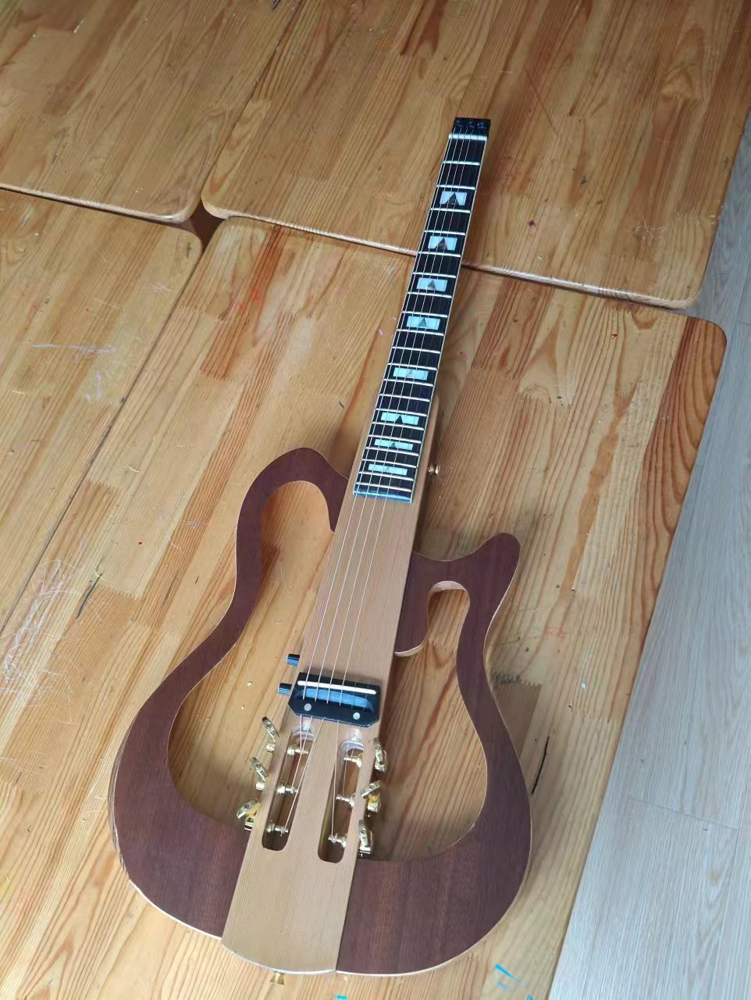

又一次走上正轨
流水账
论文的事情加上这几天电脑被霸占，又是好几天没写了。不得不说论文把我之前规律的生活彻底打乱，每天的学习，吉他还有健身都中断了很久（虽然只有几天但感觉很久）。尤其是健身，稍微停练几天就有种几个月没练的感觉。前几日和高中同学出去玩桌游，本来以为会有点尴尬，没想到比我想象的好很多，感觉我在熟人面前还是放的开点。晚上还打了麻将，好久没打红中赖子杠，都有点不记得规则了。学姐来玩的时间也定下来了，5号就可以一起玩了，好耶！不过感觉最近聊天有点点尴尬的气息，我有点没话找话，感觉学姐也不是很想回，好尴尬，救命。新吉他到了，感觉好好看，而且还能直接插耳机不会扰民。吉他还能折叠，到时候带去新加坡也挺方便。这几天把房子的事情也定下来了，1300新一个月，可能还要附加一些别的，妈的好贵。

明天起就可以恢复锻炼了，不知道掉没掉力量，每次停练几天总觉得自己掉肌肉了。而且最近也没有注意饮食，晚上家里没人就点了烧烤外卖，烧烤太好吃了，可惜不健康。感觉很多事，很多细节只有当天写下来才比较详细，稍微过个一两天就不记得啥了。我的记性时好时坏，有些事情记得可清楚，有些东西却记不太清。写着写着又想起来一些细节，跟高中同学出去玩，我问我跟高中有区别吗，他们觉得我一点都没变化，我是不是应该高兴，没显老。然后跟hyw交流留学的事情，本来以为我算有计划了，她告诉我现在就要考虑工签，公司还有跟大佬social啥的，突然发现自己还是没啥计划的p人，人家这才是j人。到时候再跟她请教请教应该咋整，想到要去social就头皮发麻。哦对，好几天没学习区块链了，到时候锻炼，学习，吉他还有旅游计划齐头并进。
又一次走上正轨
http://tsukinai.github.io/2024/06/29/01/